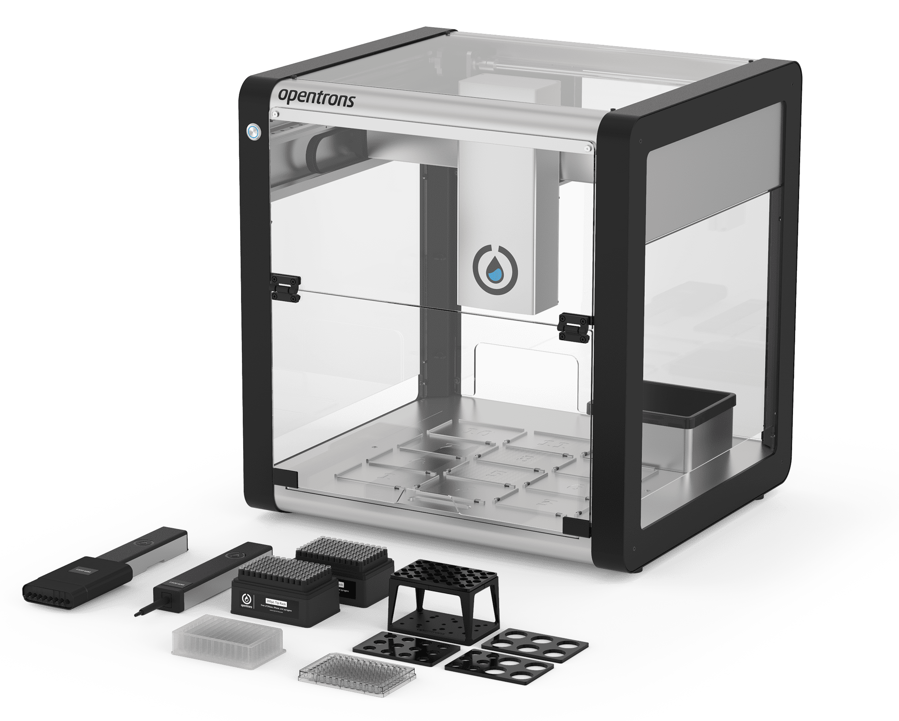

Automating Molecular Biology Procedures Using Liquid-Handling Robots
January 2024 - Present
Principle Investigator: Dr. Catalin Voiniciuc
Institution: University of Florida
Department: Horticultural Sciences
Research Focus:
This research project focused on enhancing the speed and accuracy of molecular biology experiments through the use of liquid-pipetting robots, specifically the Opentrons OT-2. These advanced robots can manage numerous liquid samples simultaneously with exceptional precision, offering a significant advantage for scientists conducting extensive sample testing. By developing Python protocols for the two robots in our lab, I managed to simplify and scale up essential tasks such as DNA assembly and plasmid extraction. This not only saves time and effort but also helps scientists find new discoveries more quickly and with fewer human errors.
Responsibilities:
I am working with Dr. Catalin Voiniciuc at the Designer Glycans Lab
and with his postdoc Moni Qiande.
In this project, my responsibilities centered around programming the necessary Python protocols for my principal investigator (PI)
Dr. Catalin Voiniciuc and fellow lab members, aiming to streamline and scale up various laboratory procedures. I developed specific
protocols for procedures such as DNA assembly and plasmid extraction, as well as modifiable code for general liquid transfers.
This customizable code allowed users to control processes like mixing, transferring, and picking up tips according to their needs. I
worked closely with Moni Quiande to test and optimize the protocols. Additionally, I organized and optimized the operational procedures
and layout for the OT-2 robots, ensuring efficient and effective use in the lab.
Currently, I am continuing to work on some protocols for the OT-2, such as for scaling a plasmid extraction protocol.
Opentrons OT-2 Robot and Various Modules/Labware

Visual of OT-2 Liquid Pipetting Precision